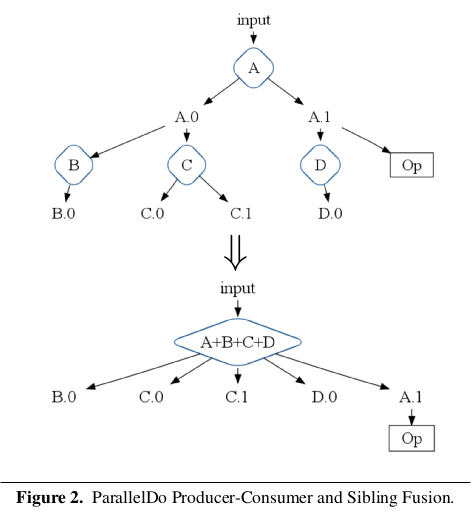
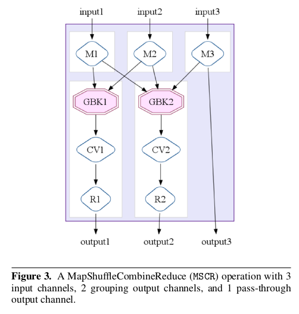
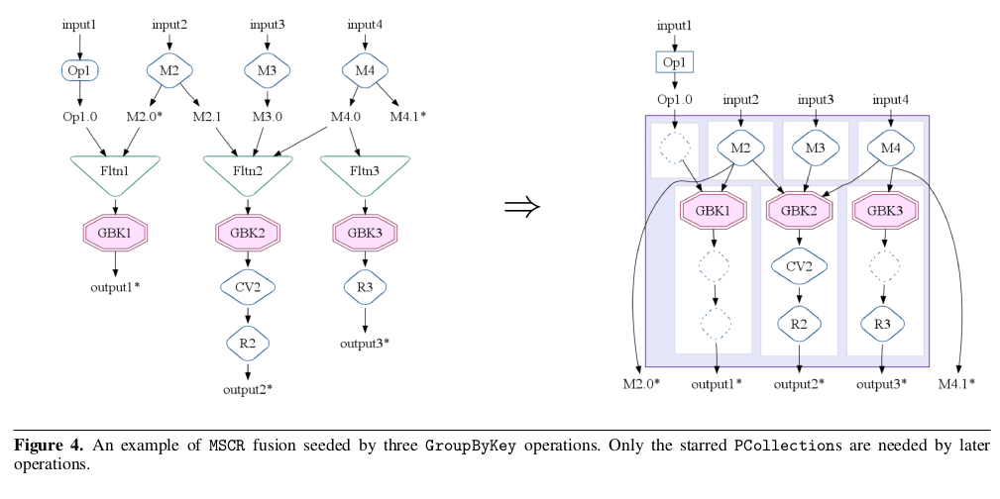

flumejava
Table of Contents
1 flumejava
- FlumeJava: Easy, Efficient Data-Parallel Pipelines
- http://pages.cs.wisc.edu/~akella/CS838/F12/838-CloudPapers/FlumeJava.pdf
- date: 2010
1.1 Abstract
At the core of the FlumeJava library are a cou-ple of classes that represent immutable parallel collections, each supporting a modest number of operations for processing them in parallel. Parallel collections and their operations present a simple, high-level, uniform abstraction over different data representations and execution strategies. 不可变的并行集合和上面的操作
To enable parallel operations to run effi-ciently, FlumeJava defers their evaluation, instead internally con-structing an execution plan dataflow graph. When the final results of the parallel operations are eventually needed, FlumeJava first op-timizes the execution plan, and then executes the optimized opera-tions on appropriate underlying primitives (e.g., MapReduces). 延迟计算. 在真正计算之前构造计算图并且优化执行计划, 然后使用原语来执行比如MR
note(dirlt): ok, alike to spark
1.2 Introduction
FlumeJava’s parallel collections abstract away the details of how data is represented, including whether the data is represented as an in-memory data structure, as one or more files, or as an ex-ternal storage service such as a MySql database or a Bigtable. # collection抽象数据表示
Similarly, FlumeJava’s parallel operations abstract away their im-plementation strategy, such as whether an operation is implemented as a local sequential loop, or as a remote parallel MapReduce invo-cation, or (in the future) as a query on a database or as a streaming computation. # operation抽象实现策略
These abstractions enable an entire pipeline to be ini-tially developed and tested on small in-memory test data, running in a single process, and debugged using standard Java IDEs and de-buggers, and then run completely unchanged over large production data. They also confer a degree of adaptability of the logical Flume-Java computations as new data storage mechanisms and execution services are developed.
1.3 Background on MapReduce
1.4 The FlumeJava Library
data representation
- PCollection<T>
- PTable<K,V> extend PCollection<Pair<K,V>>
- PObject # to inspect PCollection and PTable
primitive operation
- parallelDo # (PCollection<T>,…) => PCollection<S>
- groupByKey # PTable<K,V> => PTable<K, Collection<V>>
- combineValue # PTable<K, Collection<V>> => PTable<K, V>
- flatten # (PCollection<T>, PCollection<T>…) => PCollection<T>
derived operation
deferred evaluation # FlumeJava.run() to trigger evaluation
1.5 Optimizer
parallelDo fusion # 相当于把多个mapper放在一个MR里面来完成.

MSCR Fusion # MSCR = MapShuffleCombineReduce.
这里的MSCR扩展了原始MR操作. 1)允许多路输入 2)允许多路输出 3)允许不经过reducer而直接输出(pass-through).

这里关于MSCR优化应该和Pig里面优化是一样的, 都是以groupByKey为boundary来划分MapReduce. 尽可能地将多个MSCR合并成为一个MR.

The optimizer performs a series of passes over the execution plan, with the overall goal to produce the fewest, most efficient MSCR operations in the final optimized plan. 最终目的是将整个计算过程用最少的MSCR算子表示出来.
1.6 Executor
FlumeJava automatically creates temporary files to hold the outputs of each operation it executes. It automatically deletes these temporary files as soon as they are no longer needed by some unevaluated operation later in the pipeline. 删除不必要的中间文件
FlumeJava strives to make building and running pipelines feel as similar as possible to running a regular Java program. Using local, sequential evaluation for modest-sized inputs is one way. Another way is by automatically routing any output to System.out or System.err from within a user’s DoFn, such as debugging print statements, from the corresponding remote MapReduce worker to the main FlumeJava program’s output streams. Likewise, any exceptions thrown within a DoFn running on a remote MapReduce worker are captured, sent to the main FlumeJava program, and rethrown. 算子输出和异常都会重定向到标准输出和标准错误.
When developing a large pipeline, it can be time-consuming to find a bug in a late pipeline stage, fix the program, and then reexecute the revised pipeline from scratch, particularly when it is not possible to debug the pipeline on small-size data sets. To aid in this cyclic process, the FlumeJava library supports a cached execution mode. In this mode, rather than recompute an operation, FlumeJava first attempts to reuse the result of that operation from the previous run, if it was saved in a (internal or user-visible) file and if FlumeJava determines that the operation’s result has not changed. An operation’s result is considered to be unchanged if (a) the operation’s inputs have not changed, and (b) the operation’s code and captured state have not changed. FlumeJava performs an automatic, conservative analysis to identify when reuse of previous results is guaranteed to be safe; the user can direct additional previous results to be reused. Caching can lead to quick edit-compile-run-debug cycles, even for pipelines that would normally take hours to run. 重复利用cache住的中间结果.
FlumeJava currently implements a batch evaluation strategy, for a single pipeline at a time. In the future, it would be interesting to experiment with a more incremental, streaming, or continuous execution of pipelines, where incrementally added input leads to quick, incremental update of outputs. It also would be interesting to investigate optimization across pipelines run by multiple users over common data sources. 扩展到增量/流式处理.